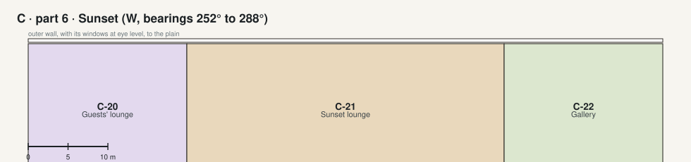

The Crown · part 6 · Sunset W, bearings 252° to 288°

| Code | Room | What it is for | Also | Size | Two of a kind |
|---|---|---|---|---|---|
| C-20 | Guests' lounge ◉ page | Where visitors spend their evenings up here: a sectional round a table, desks for letters home, a kitchenette, a corner for children. | (Guests sleep below ground, in the guest wing on L1.) | 330 m² | |
| C-21 | Sunset lounge ◉ page | Low sofas facing the west windows: at sunset the sun shines straight in, in a blue sky; where the evening up in the Crown begins. | Drinks at sunset. | 660 m² | |
| C-22 | Gallery ◉ page | Jim's paintings from the studio and his photographs of Mars. | Exhibitions; a quiet room by the sunset lounge. | 330 m² |